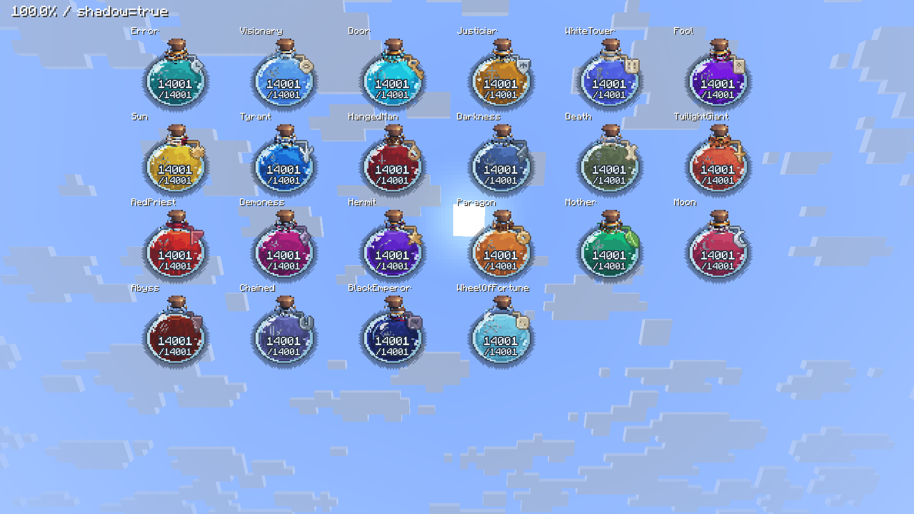

Історичний відхилений варіант. Актуальна версія: повернення брелків v4, без затемнення за замовчуванням.
Знімки зроблені у Minecraft 26.2 через робочий рендер флаконів і чисел. На аркуші всі 22 шляхи показані разом для порівняння. Зображення не перемальовані й не ретушовані. Нижче — початкові та виправлені текстури кожного брелка, збільшені без згладжування.
Відкрити оригінал знімка · Що змінено й перевірено

Ліворуч — до виправлення, праворуч — після. Число під карткою — кількість окремих груп пікселів. У всіх нових брелків одна зв’язна форма; отвори ключа й петлі залишені прозорими.